The Year of Light
Jan 17
Parking Lot, Severn, MD
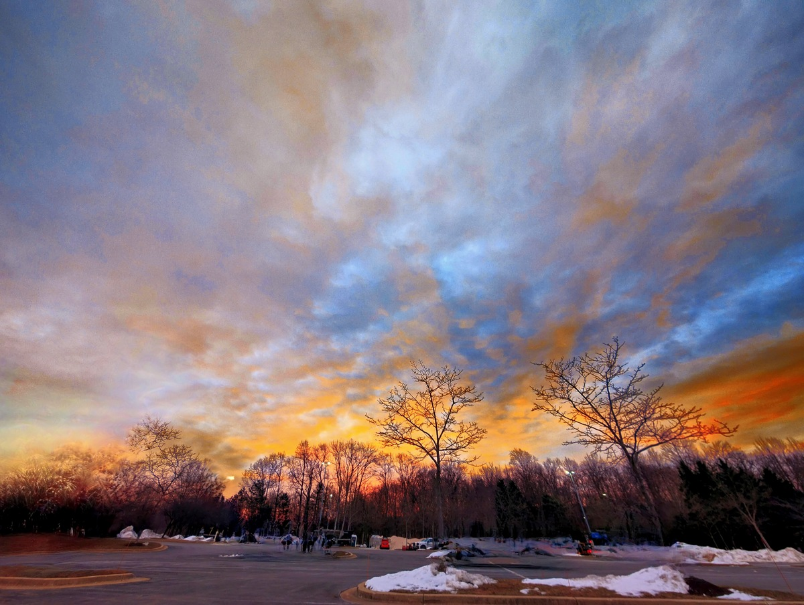
Jan 16
Old Bank Building
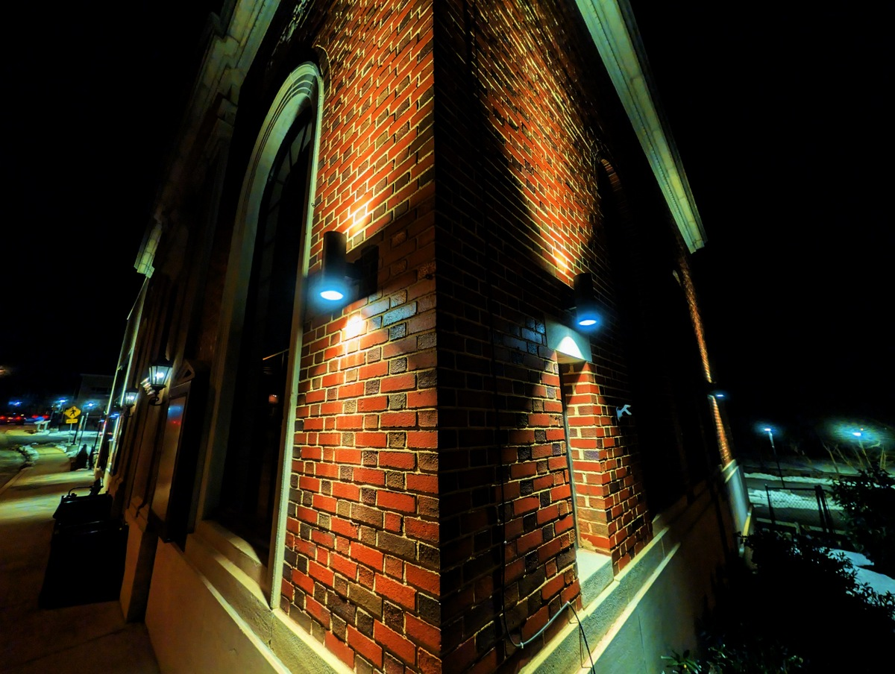
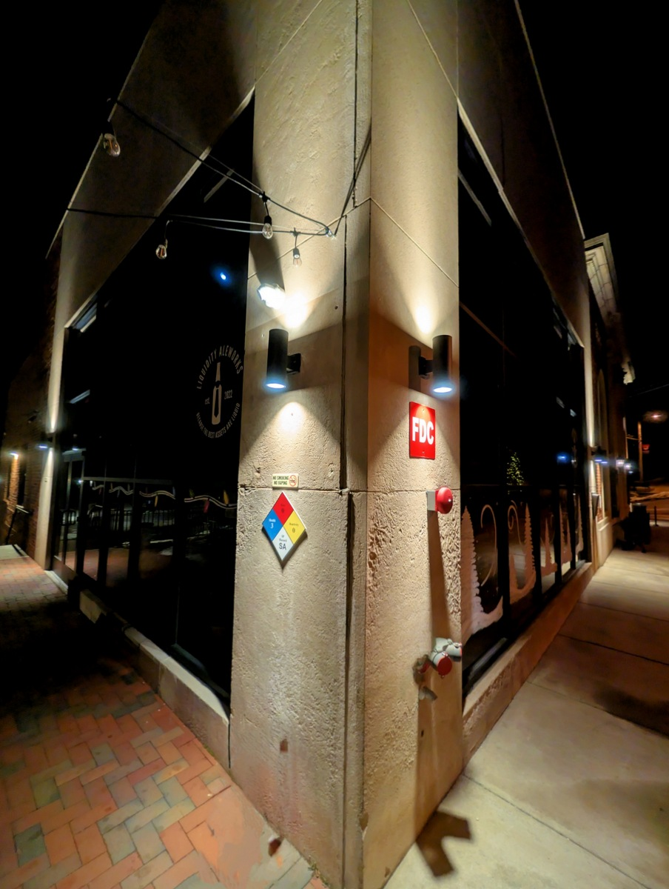
Jan 15
Old Bank Building. Mt Airy, Md
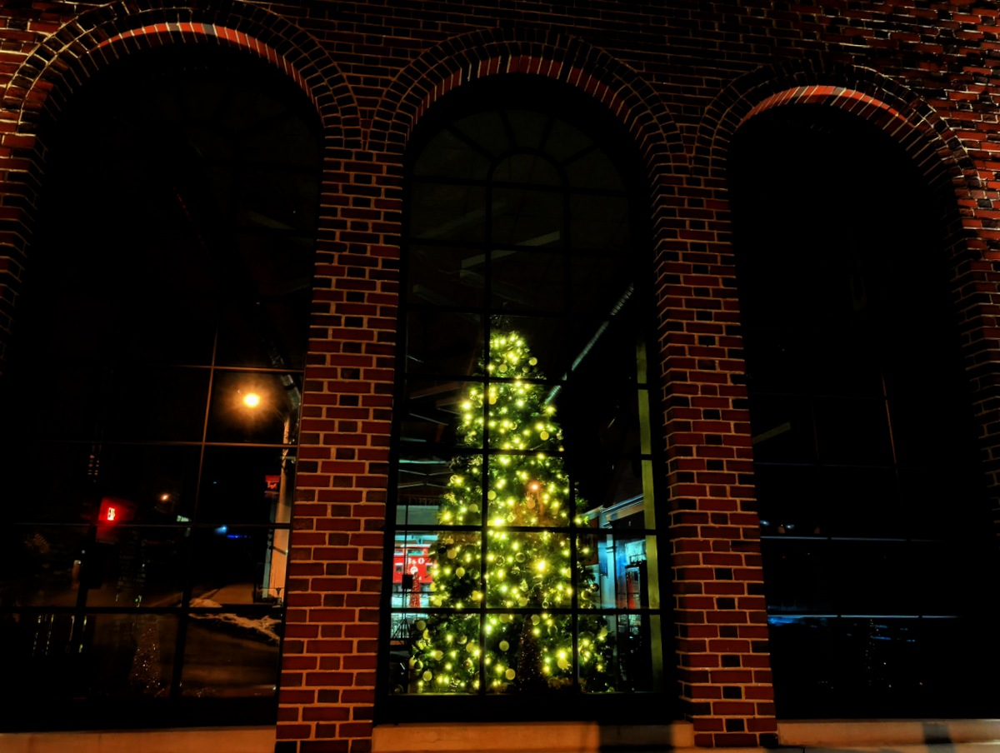
Jan 14
Old Bank Building. Mt Airy, Md
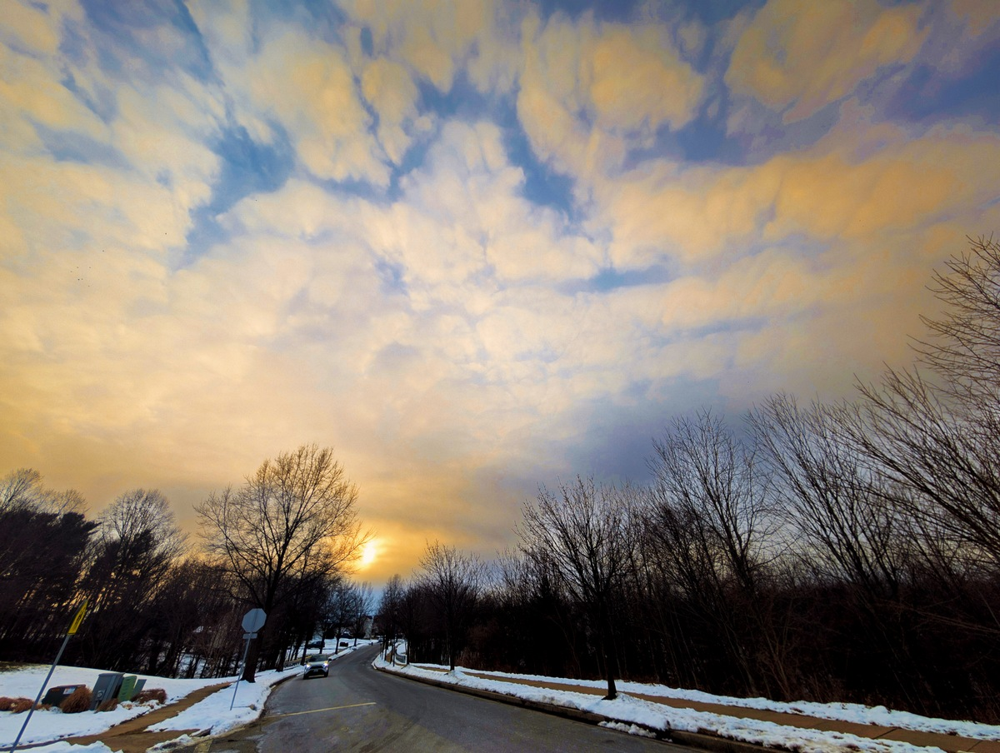
Jan 13
Mt Airy Moon Setting
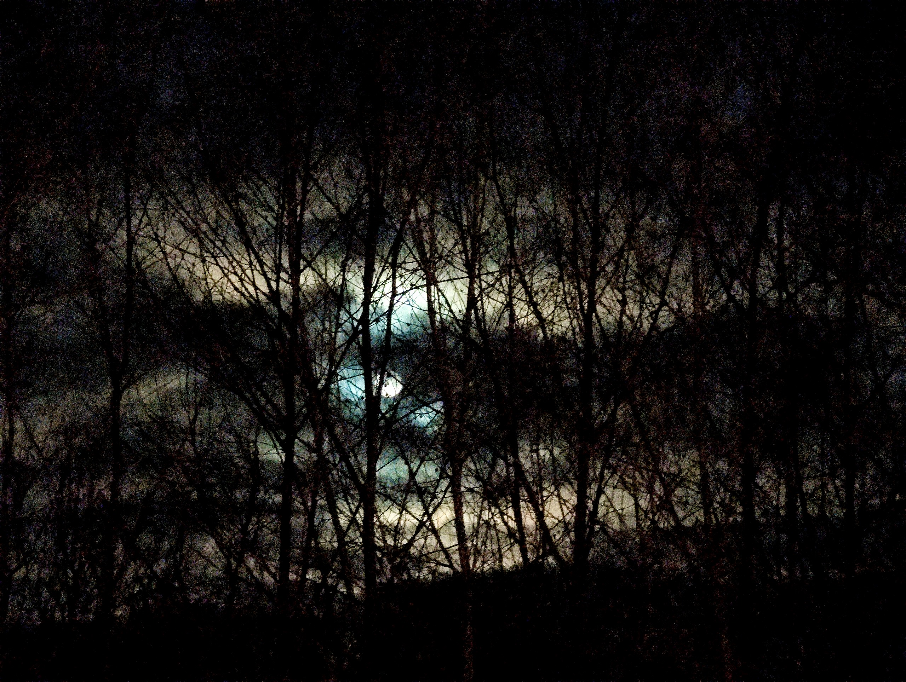
Jan 12
Kraft Farm
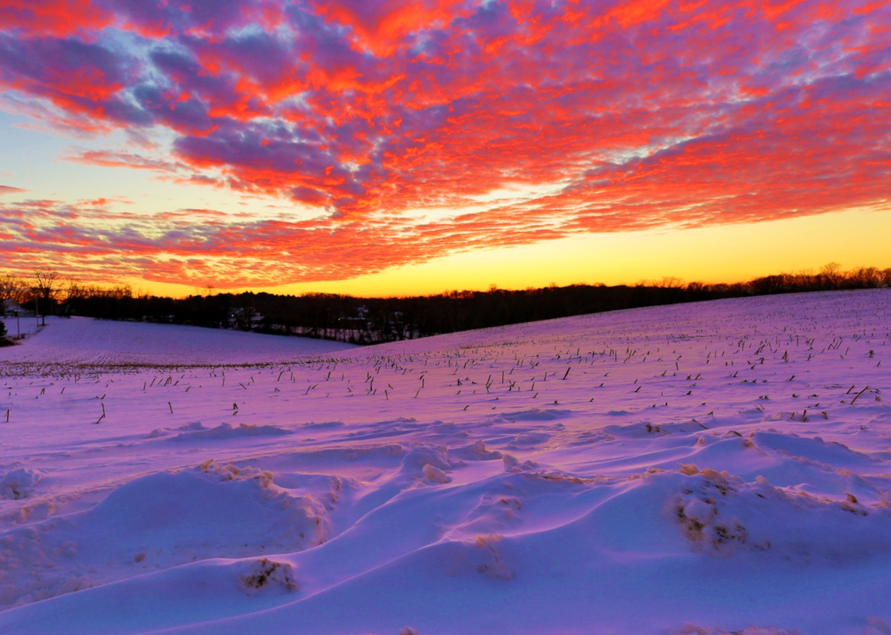
Jan 11
Summer Sweet Lane
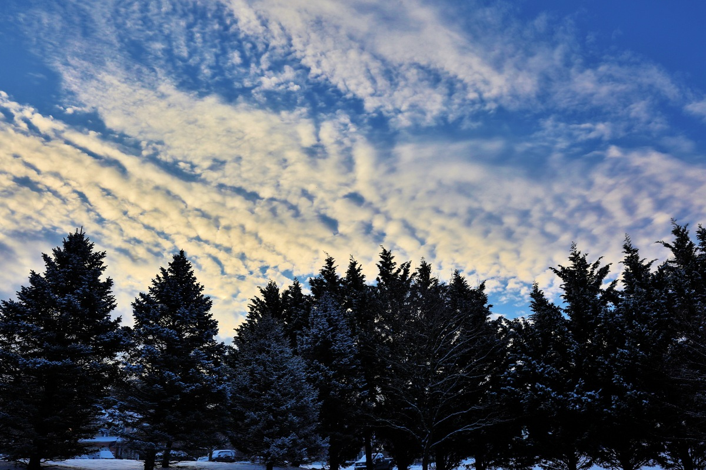
Jan 10
Scotch Heather Ave
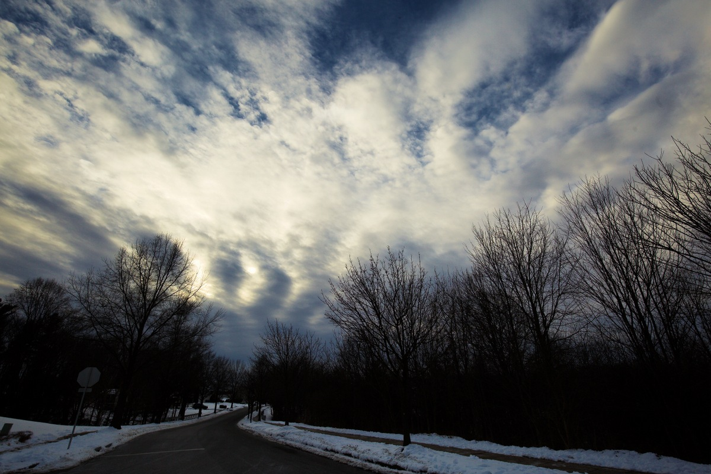
Jan 9
Buffalo Road
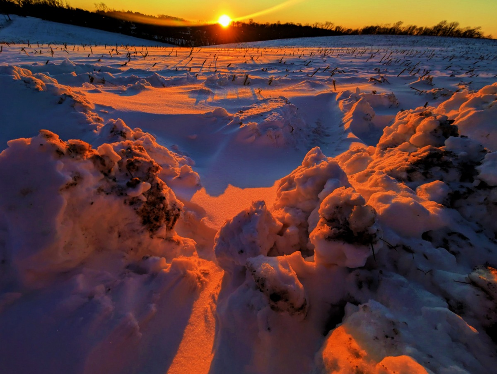
Jan 8
Scotch Heather Ave
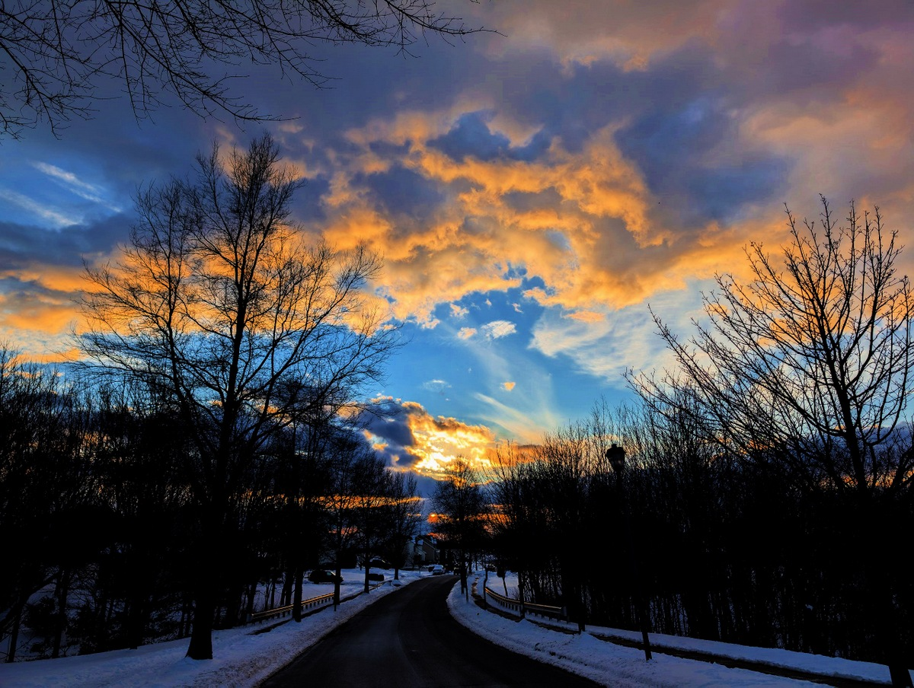
Jan 7
DownTown Mt. Airy Christmas Tree
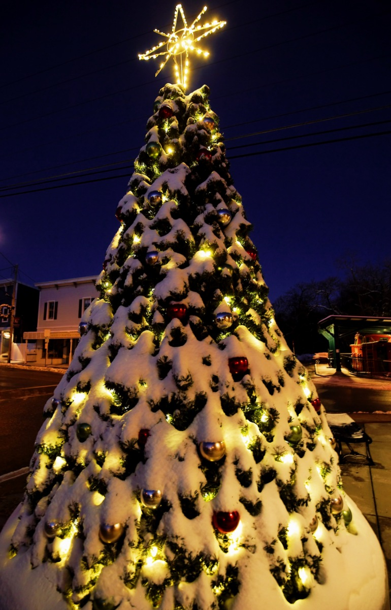
Jan 6
Scotch Heather Ave

Jan 5
Kraft Farm

Jan 4
Jan 3
Rt 32 and BurntWoods Rd

Jan 2
Scotch Heather Ave
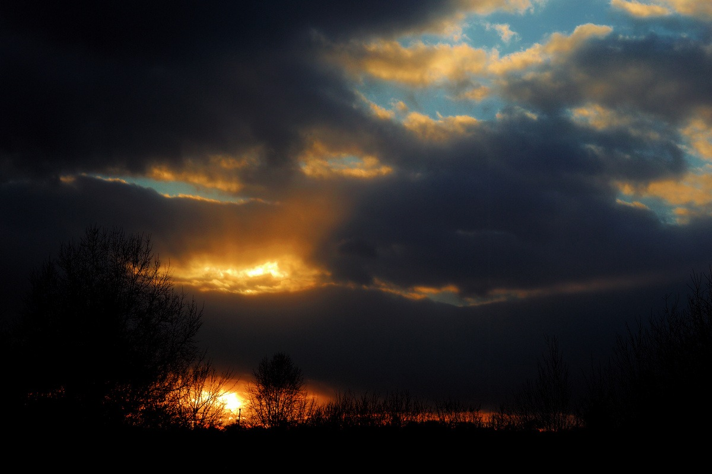
Jan 1
Leishar Farm
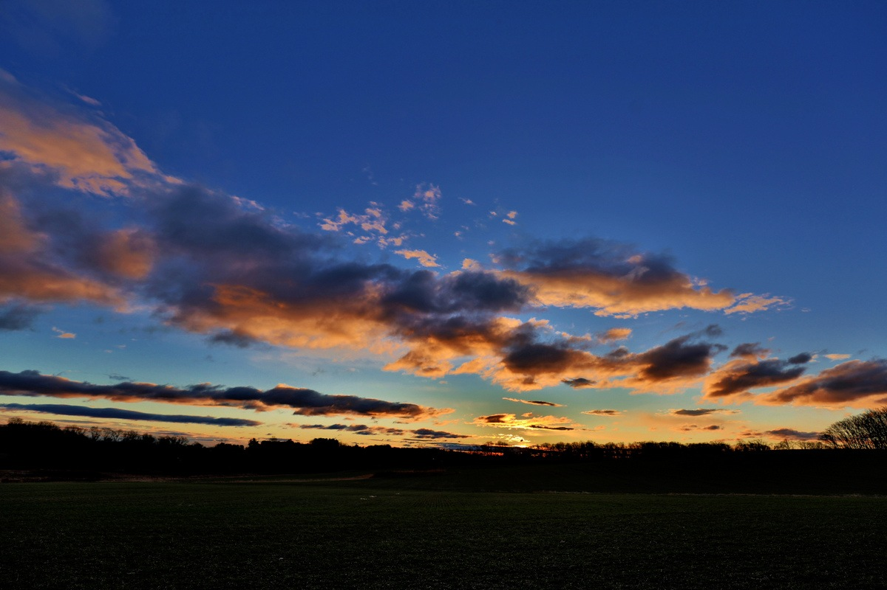